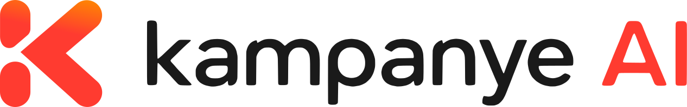

Wajah ini tidak pernah berdiri di depan kamera. Kami mengarahkannya, AI menggarapnya, sampai layak tayang di televisi.
Cuplikan Kampanye layanan publik, Polda Kalimantan Timur
Format Film kampanye, 16:9
Proses Diarahkan manusia, digarap AI